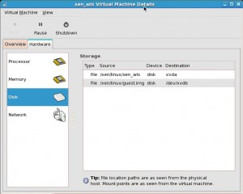

Installing XEN
yum install xen virt-manager kernel-xen# chkconfig xend on# reboot
Make sure you boot CentOS server using XEN kernel.
# virt-manager &RPM needs
bridge-utils-1.1.2.i386.rpm iproute-2.6.18-4.el5.i386.rpm kernel-xen-2.6.18-8.el5.i686.rpm kernel-xen-devel-2.6.18-8.el5.i686.prm udev-095-14.5.el5.i386.rpm libvirt-0.7.0-1.fc11.src.rpm
CPU management in xen guest os
we can assign more then 1 cpu to a Paravirtualize guest if we have more then 1 cpu in our host machine.
virt-manager -> Open -> View -> Details -> Hardware -> processor ->
and then change allocation as much u want but not more then cpu present in host machine.
Note : we can’t assign more then one cpu in fully-virtualized guest os like windows.
2. Memory management in xen guest os ?
We can change the ram for a guest os by changing the parameter in configuration file which is placed at “/etc/xen/”
Open the configuration file which having the name as same as domain name and change the parameter “memory= 2048” right now its having a 2gm memory u can change it as much u want but u can’t give it more then memory what the base domain contain dom0,
2. Disk management in xen guest
Create a disk first using below command.
#dd if=/dev/zero of=/vm/images/guest.img bs=1M count=5120
it will create 5120mb disk file around 5gb and save it at location /vm/images/ having name guest.img
To extend and make it 10G without losing data, the below command can be executed which is the safest method, I think.
# dd if=/dev/zero bs=1M count=5120 >> /vm/images/guest.img
To attach a new file based image as xvdb to guest named guest1 with read-write, below command can be used.
# xm block-attach xen_wls 1 tap:aio:/vm/images/guest.img /dev/xvdb w
Where xen_wls is the domain name vm must be started before using this command ,the guest.img is a file what we created using dd command.

xm create -c DOMU extra=" init 1 xencons=xvc0"
to run the xen guest in single user mode DOMU is the xen guest name
{kind=link}
{kind=link}
{kind=link}
{kind=link}